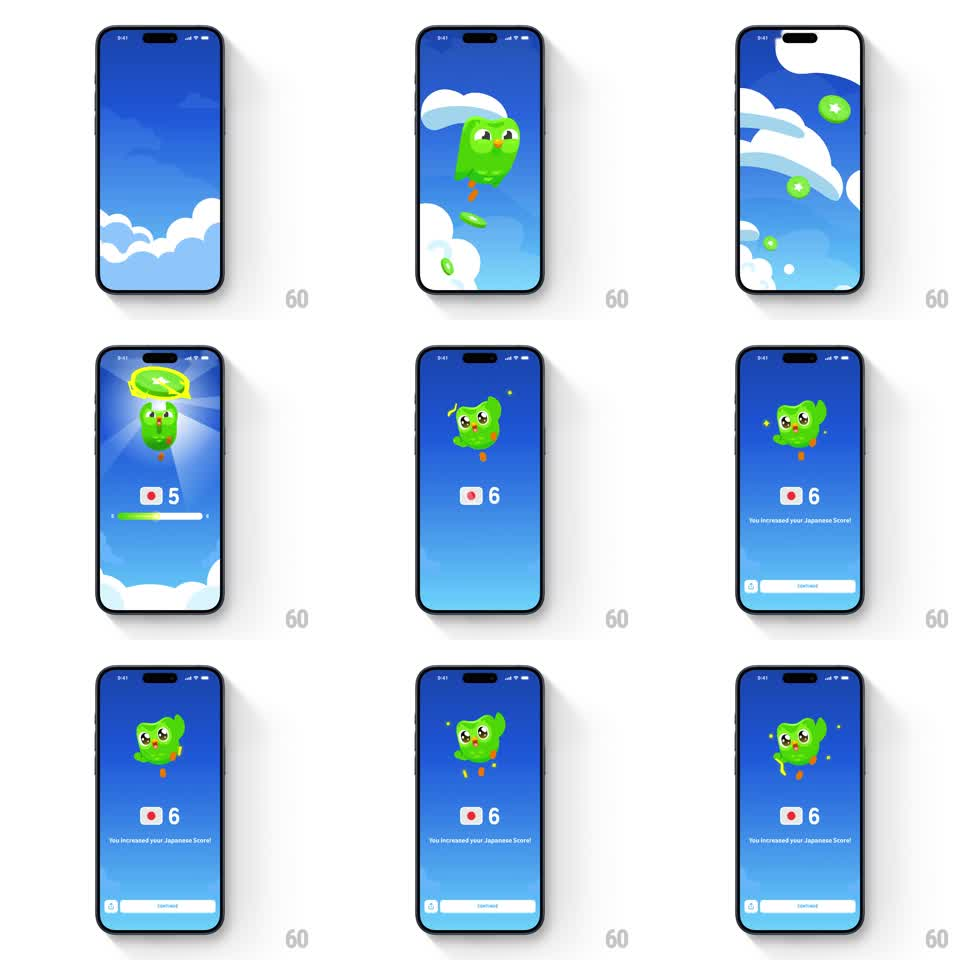

Media
Frame-by-frame

Rebuild this animation 1:1: Duolingo's score increase celebration - the owl parachutes down through a cloudy sky, lands, a golden ring bursts above it, the score counter ticks up (5 -> 6), a progress bar fills, and "You increased your Japanese Score!" settles in with a continue button.

Rebuild this animation 1:1: Duolingo's score increase celebration - the owl parachutes down through a cloudy sky, lands, a golden ring bursts above it, the score counter ticks up (5 -> 6), a progress bar fills, and "You increased your Japanese Score!" settles in with a continue button. ## Integration Integration: stack-agnostic spec - springs given as stiffness/damping, timed motions as duration + curve; map every value to your framework and animation library of choice. ## Scene Full-screen sky gradient (deep blue to light) with drifting clouds. The owl descends from the top holding nothing, lands center, celebrates with sparkles. Below: flag icon + score numeral, a progress bar, confirmation copy, continue button. ## Motion spec Pattern: multi-stage reward sequence, ~3s. - Descent: owl falls from above screen with a soft sway (translateY -100vh -> center, 800ms, ease-out, rotate +-5deg pendulum), clouds drift past at different speeds (parallax layers, 3 depths). - Landing: small squash-and-stretch bounce (scaleY 0.85 -> 1, 250ms) + golden ring flash above its head (scale 0 -> 1 -> fade, 400ms) + sparkles. - Score: numeral ticks up with a flip (rotateX 90 -> 0, 300ms) as the progress bar fills to the new value (500ms, ease-out). - Copy fades in (200ms), continue button slides up (250ms). ## Calibration - The pendulum sway during descent gives it weightlessness; a straight drop feels like a system dialog. - The numeral flip and bar fill are simultaneous - one "score changed" beat. ## Reduced motion Owl fades in at center; score and bar set instantly; no parallax. ## Don't miss - Clouds move at 3 parallax speeds during descent, then hold. - Squash on landing is vertical only - the owl never deforms horizontally.